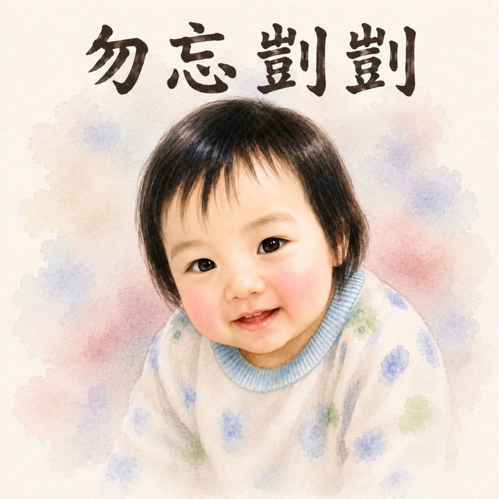
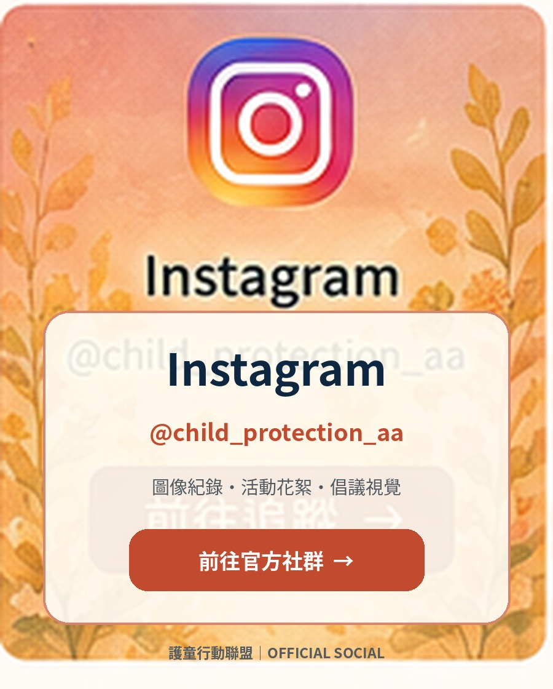
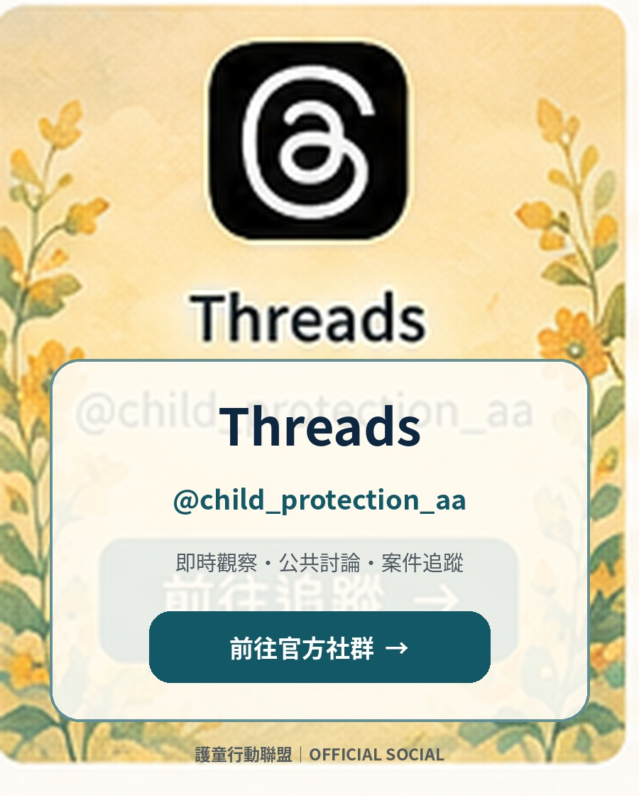

高雄疑似兒虐案後續｜安置之外，誰持續確認孩子安全？
一名孩子已安置，另一名仍在治療；追問出院交接與後續安全評估。
中央社、公視新聞網公開報導整理・案件仍在偵辦
閱讀詳細資訊 →
案件、紀錄、制度與行動，從這裡找到完整內容。
最新報導與近期重要入口
10/22 時間與法庭為本站依提供資訊整理，尚待官方核對；實際庭期、地點及旁聽規則以法院公告為準。
先掌握案件，再深入司法紀錄與制度責任
依發布日期由新到舊，內文附原始來源。
一名孩子已安置，另一名仍在治療；追問出院交接與後續安全評估。
中央社、公視新聞網公開報導整理・案件仍在偵辦
閱讀詳細資訊 →案件仍在偵辦；整理已公開進度，並追問三名孩子的醫療、安全與安置如何被持續接住。
中央社、公視新聞網公開報導整理・案件仍待司法釐清
閱讀詳細資訊 →
從中途學校輔導量能、連假求助到網路侵害與跨部門問責，逐項追問安置之後的實際支持。
每日護童快報・公開來源與制度分析
閱讀詳細資訊 →
不以偵查資訊預斷責任；從聲押程序追問安全、交接與可稽核的保護流程。
每日護童快報・檢察機關公開資料與制度分析
閱讀詳細資訊 →不硬湊新案；從英國強制通報新制，追問揭露後的安全評估、交接與責任留痕。
每日護童快報・官方一手資料與制度分析
閱讀詳細資訊 →不硬湊新案；從安全計畫、風險復評與安置門檻，追問誰負責證明孩子真正安全。
每日護童快報・官方一手資料與制度分析
閱讀詳細資訊 →從麻州官方調查，追問通報、查核、風險復評與機構責任如何在孩子還能被救援時啟動。
每日護童快報・官方一手資料與制度分析
閱讀詳細資訊 →以司法紀錄與制度責任，追問每一道保護環節。

從照護系統失靈到兒少保護，整理案件背景、關鍵時間軸與制度責任。
閱讀詳細資訊 →
七起案件看見風險如何在制度縫隙間累積；進入系統，不等於真正被接住。
閱讀詳細資訊 →
台灣近十年暗網與匿名網絡犯罪：12案判決、時間軸、受害者保護與制度改革。
閱讀詳細資訊 →台灣、大陸、香港、日本與韓國，沿著案件看見保護的缺口。
以圖像閱讀案件與司法程序；資料界限與來源請見各篇說明。
把名字留下，把守護孩子的責任繼續帶往明天。

走進紀念專區，留下記憶，也持續追問保護如何更早抵達。
進入專區 →近期活動與公開倡議，詳細資訊請閱讀活動頁。
公開程序的可查閱紀錄
完整影片與繁簡字幕版本，保留每一份守護的聲音。

讓每一次看見，都成為守護。｜藝術意象
護童行動聯盟持續參與法院旁聽、案件追蹤、公共倡議與被害者支持。歡迎加入社群，也為孩子留下一句守護的話。


官方社群｜讓守護持續被看見
追蹤最新倡議、活動與公開紀錄。

Instagram
進入專區 →
Threads
進入專區 →Facebook
進入專區 →